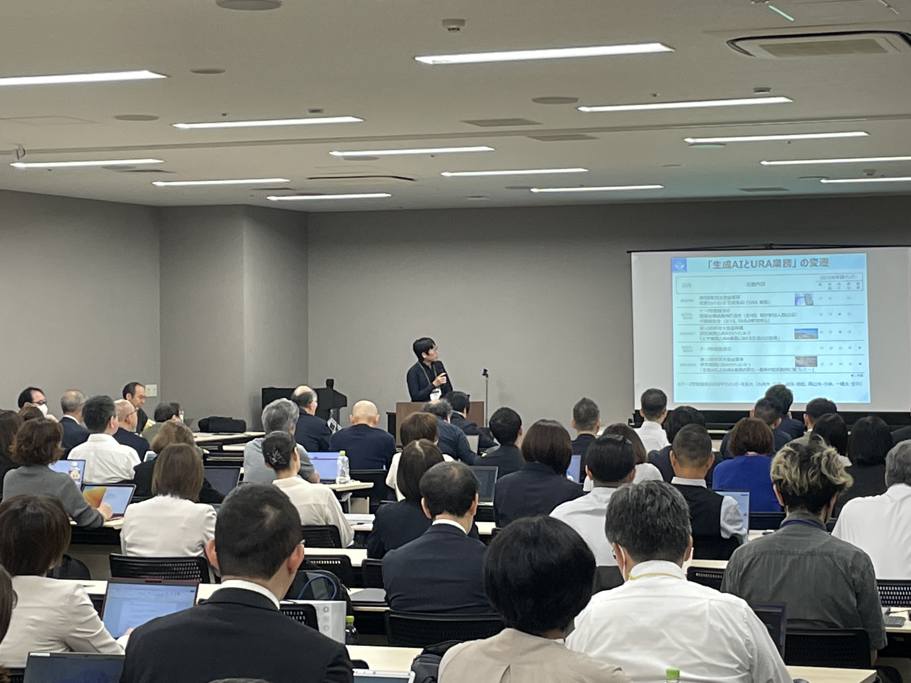
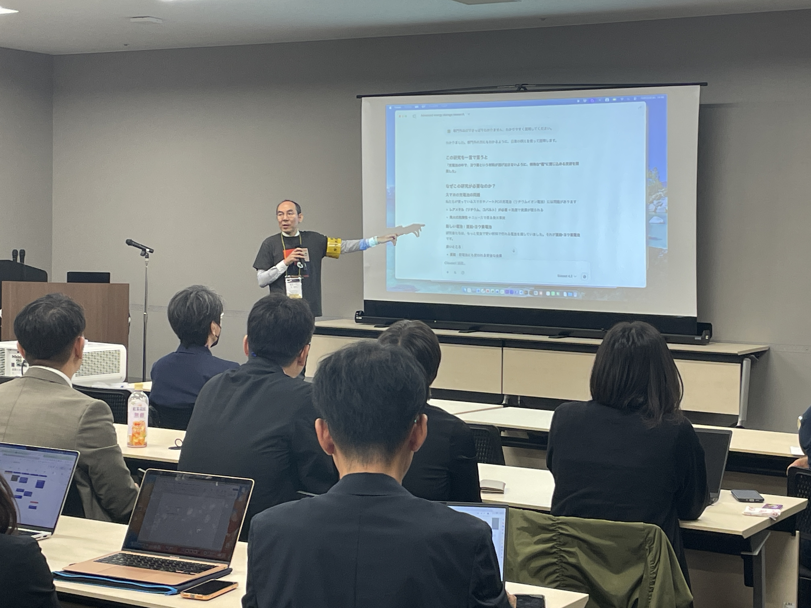
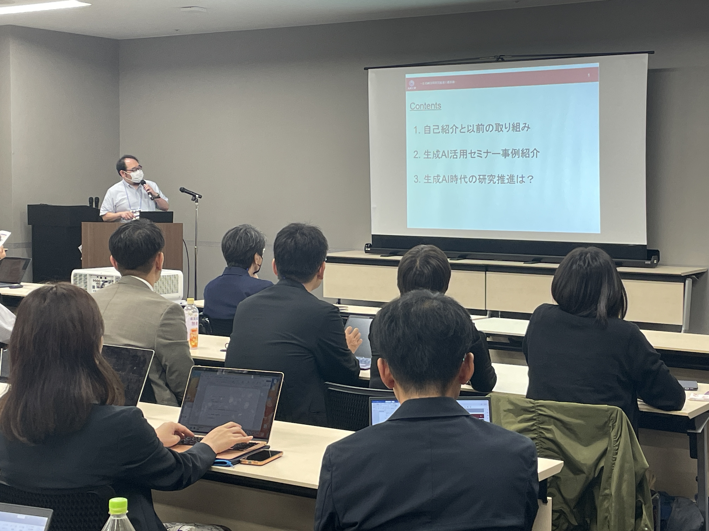

10/22 RA協議会年次大会 セッションX-1を開催しました
「生成AIによるURA業務の変化 ~最新の技術動向に基づいて~」と題して10/22(水) 14:15~にRA協議会 第11回年次大会@熊本 会員セッションを開催しました。
熊本城ホール 会場3の部屋がいっぱいになるほど、盛況でした。
約140名の方がご参加いただきました。ご参加ありがとうございました。
会場にて、いただいたご質問についていくつか回答する時間がございませんでしたので、こちらで回答いたします。
（質問）生成AI利用時のセキュリティに関する注意点はありますか？
→自機関における生成AI利用に関するガイドラインがありましたら、まずはそちらをご確認ください。そのうえで、機微な情報を入力することに関してどのような取り決めとなっているかご確認ください。
（質問）情報セキュリティはどのように担保されていますか？
→機関、AIサービス、AIサービスとの契約形態により様々なケースが考えられるます。ある機関においては、機微な情報を生成AIサービスに入力しないことを決めております。また、AIサービスの種類によっては、機微な情報と思われるテキストが入力された場合、AIが応答しないという設定もございます。
→個人の利活用の場合は、機微な情報を入力しないこと。また、入力した情報を学習させない、という設定を行うと安心かと思います。
 当日の発表資料をご希望の方はご連絡いただけますと幸いです。検討いたします。
＜ お知らせ一覧に戻る